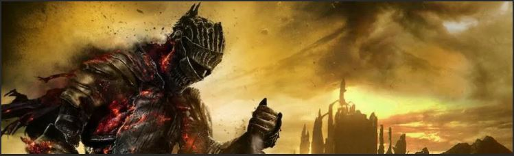
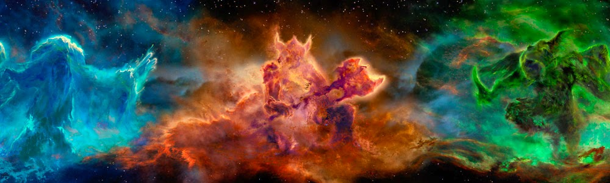

Империя Тамриэла находится на грани падения. Король Скайрима убит. Претенденты на трон объединяются в союзы. В разгар конфликта пробуждается гораздо более опасное, древнее зло. Драконы, долгое время не появлявшиеся в летописях, вернулись в Тамриэл. Будущее Скайрима и всей Империи висит на волоске, все ждут предсказанного Драконорожденного, героя с силой Голоса, единственного, кто сможет противостоять драконам.
Skyrim сохраняет концепцию большого и открытого мира, характерную для серии The Elder Scrolls. Игрок может свободно странствовать по всей территории провинции Скайрим, включающей в себя девять крупных городов, множество мелких селений, а также обширные пространства диких земель и высоких гор. В городах игрок может предаваться таким занятиям, как приготовление пищи и зелий, зачарование предметов, фермерство, работа с рудой или кузнечное дело. При этом разработчики отмечали, что игровой процесс может занять около 500 часов.
Уровень персонажа повышается по мере улучшения навыков, за определённое количество таких улучшений (зависит от уровня игрока и уровня навыка) персонаж получает один уровень. В игре есть система «автолевеллинга» — чем выше уровень игрового персонажа, тем более ценные предметы он находит в игре и тем более опасные противники ему противостоят. Разработчики решили полностью отказаться от системы классов, представленной в Oblivion, предыдущей игре серии. В игре присутствуют таланты — особые способности, связанные с определёнными навыками игрока. Таланты организованы в разветвлённую систему под названием «древо навыков». Каждое повышение уровня позволяет взять очередной талант. Всего в игре 280 талантов.
Оружие можно назначать как в правую, так и в левую руку, что позволяет нести по одному виду оружия в каждой руке. Специальное меню позволит игроку быстро переключаться между различными типами оружия и доспехов. Щитом можно атаковать, а на то чтобы выстроить им блок, требуется определённое время. Каждый из типов оружия (одноручное, двуручное, лук) имеет своё особое преимущество и назначение. При стрельбе из лука требуется больше времени на то, чтобы натянуть тетиву, чем это было в предыдущих играх серии Elder Scrolls, однако выстрелы при этом наносят противнику больший урон. По этой причине стрелы стоят весьма дорого. Игрок, вооружённый луком, может использовать его для защиты в ближнем бою, точно так же, как может использовать для этой цели двуручное оружие или щит (хотя щит в данной ситуации наиболее эффективен).
Различные типы заклинаний имеют разнообразные качества — так, заклинания холода закономерно замедляют и при этом истощают запас сил противников, в то время как заклинания огня наносят длительный урон на всём протяжении горения и даже может поджечь окружающие объекты, а заклинание электричества «сжигает» вражескую ману (запас очков магии), а также может дезинтегрировать противника (мгновенная смерть противника, труп превращается в пепел). Заклинания можно произносить сразу с двух рук, что даст большее количество урона. Сочетание заклинаний тоже возможно, например огонь и молния, при этом объект, по отношению к которому будет использована данная связка, будет получать эффекты от обоих видов магии. Другие доступные в игре заклинания могут, например, восстанавливать потерянные очки здоровья, на время оживлять мёртвых, создавать источники света в тёмных помещениях или даже превращать, к примеру, железную руду в серебряную.
Запас сил расходуется на появившийся «спринт», позволяющий двигаться быстрее определённое время. Как и в Morrowind и Oblivion, в игре есть режим скрытного передвижения. При этом, увидев, что игрок куда-то крадётся, неигровой персонаж (NPC) насторожится и будет внимательно следить за дальнейшими передвижениями игрока. Кинжалы и луки при атаке из этого режима действуют эффективнее, а при наличии некоторых умений причиняют огромный ущерб.